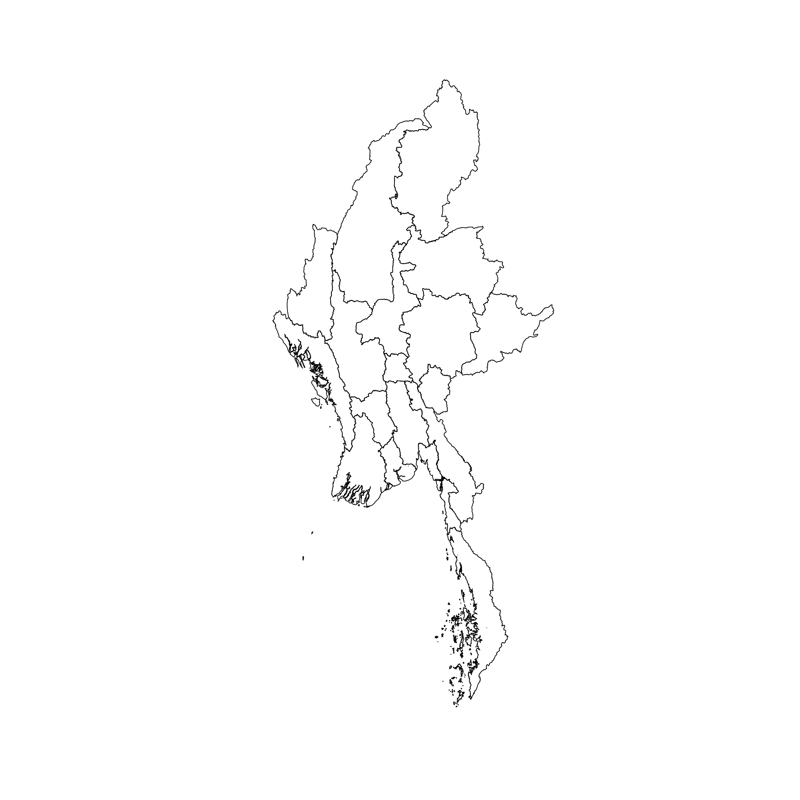
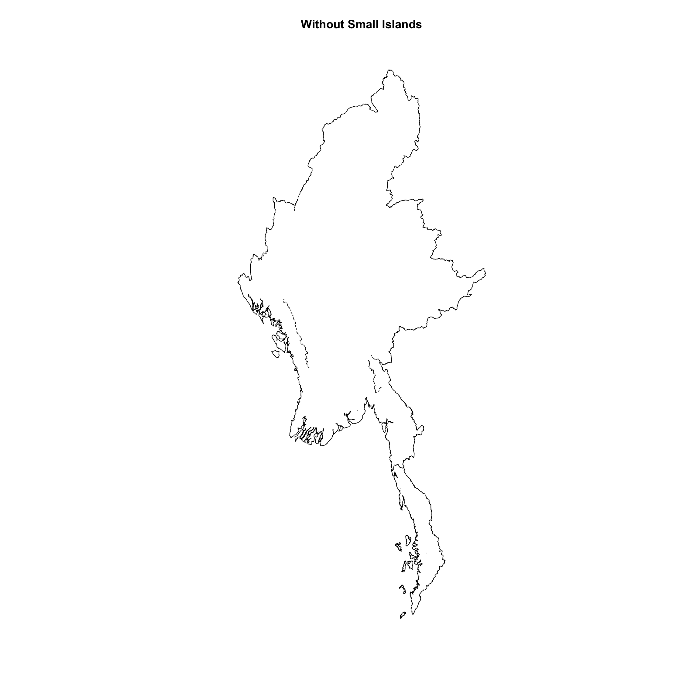
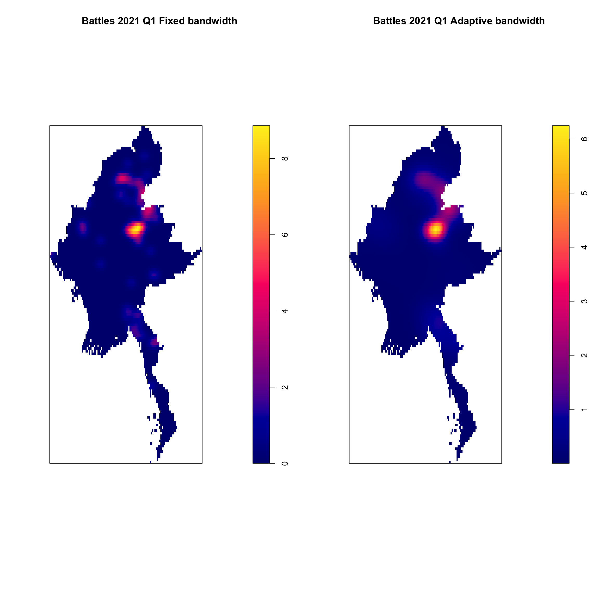
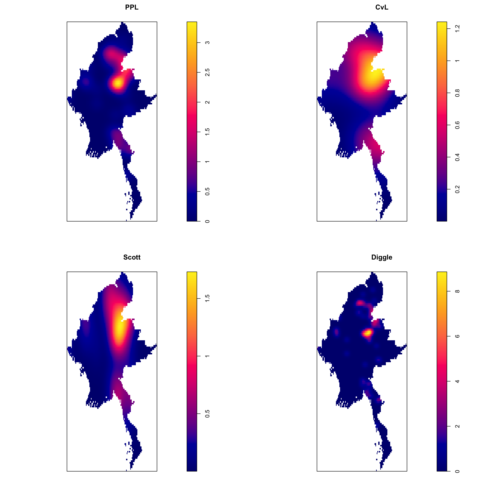
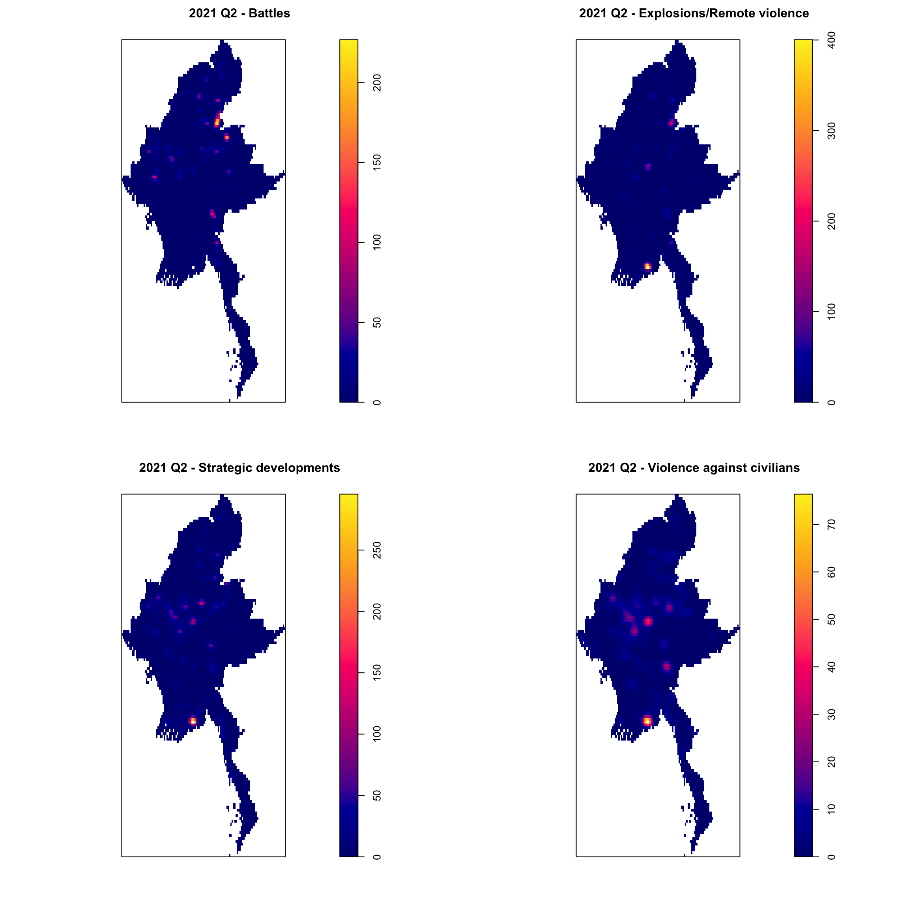

pacman::p_load(sf,tidyverse,tmap,spatstat,raster)Take-home Exercise 1: Geospatial Analytics for Social Good: Application of Spatial and Spatio-temporal Point Patterns Analysis to discover the geographical distribution of Armed Conflict in Myanmar
1. Overview
Millions of people have their lives shattered by armed conflict – wars – every year.
Armed conflict has been on the rise since about 2012, after a decline in the 1990s and early 2000s. First came conflicts in Libya, Syria and Yemen, triggered by the 2011 Arab uprisings. Libya’s instability spilled south, helping set off a protracted crisis in the Sahel region. A fresh wave of major combat followed: the 2020 Azerbaijani-Armenian war over the Nagorno-Karabakh enclave, horrific fighting in Ethiopia’s northern Tigray region that began weeks later, the conflict prompted by the Myanmar army’s 2021 power grab and Russia’s 2022 assault on Ukraine. Add to those 2023’s devastation in Sudan and Gaza. Around the globe, more people are dying in fighting, being forced from their homes or in need of life-saving aid than in decades.
1.1 Objective
Geospatial analytics hold tremendous potential to address complex problems facing society. In this study, I will apply spatial point patterns analysis methods to discover the spatial and spatio-temporal distribution of armed conflict in Myanmar.
1.2 Data
1.2.1 Armed Conflict Data
For the purpose of this assignment, armed conflict data of Myanmar between 2021-2024 from Armed Conflict Location & Event Data (ACLED), an independent, impartial, international non-profit organization collecting data on violent conflict and protest in all countries and territories in the world, should be used.
In terms of event types, I will focus on at least four main event types, namely: Battles, Explosion/Remote violence, Strategic developments, and Violence against civilians.
In terms of study period, I will focus on quarterly armed conflict events from January 2021 until June 2024.
1.2.2 GIS Data
I will be using Myanmar State and Region Boundaries with Sub-regions MIMU v9.4because it provides more detailed geospatial data, including sub-regions. This will allow me to perform a more granular analysis.
1.3 Importing Packages
The following R packages are used for this assignment:
sf, for importing, managing and processing geospatial data.
tidyverse, for importing, wrangling and visualising data.
tmap, to create thematic maps.
spatstat, for point pattern analysis.
raster,to reads, writes, manipulates, analyses and model of gridded spatial data (i.e. raster).
2. Data Wrangling
2.1 Aspatial Data
2.1.1 Importing Data
acled_sf <- read_csv("data/aspatial/2021-01-01-2024-06-30-Myanmar.csv")2.1.2 CRS Adjustment
st_crs(acled_sf)Coordinate Reference System: NAAs the current acled_sf do not have CRS, which means there is no geometry column in the sf object. Therefore, before we change the CRS, we need to convert the longitude and latitude columns into a spatial format. Since Myanmar is UTM zone 47(EPSG:32647), lets create the geometry column and transform the CRS to UTM Zone 47N.
acled_sf <- acled_sf %>%
st_as_sf(coords = c("longitude", "latitude"), crs=4326) %>%
st_transform(crs = 32647)st_crs(acled_sf)Coordinate Reference System:
User input: EPSG:32647
wkt:
PROJCRS["WGS 84 / UTM zone 47N",
BASEGEOGCRS["WGS 84",
ENSEMBLE["World Geodetic System 1984 ensemble",
MEMBER["World Geodetic System 1984 (Transit)"],
MEMBER["World Geodetic System 1984 (G730)"],
MEMBER["World Geodetic System 1984 (G873)"],
MEMBER["World Geodetic System 1984 (G1150)"],
MEMBER["World Geodetic System 1984 (G1674)"],
MEMBER["World Geodetic System 1984 (G1762)"],
MEMBER["World Geodetic System 1984 (G2139)"],
MEMBER["World Geodetic System 1984 (G2296)"],
ELLIPSOID["WGS 84",6378137,298.257223563,
LENGTHUNIT["metre",1]],
ENSEMBLEACCURACY[2.0]],
PRIMEM["Greenwich",0,
ANGLEUNIT["degree",0.0174532925199433]],
ID["EPSG",4326]],
CONVERSION["UTM zone 47N",
METHOD["Transverse Mercator",
ID["EPSG",9807]],
PARAMETER["Latitude of natural origin",0,
ANGLEUNIT["degree",0.0174532925199433],
ID["EPSG",8801]],
PARAMETER["Longitude of natural origin",99,
ANGLEUNIT["degree",0.0174532925199433],
ID["EPSG",8802]],
PARAMETER["Scale factor at natural origin",0.9996,
SCALEUNIT["unity",1],
ID["EPSG",8805]],
PARAMETER["False easting",500000,
LENGTHUNIT["metre",1],
ID["EPSG",8806]],
PARAMETER["False northing",0,
LENGTHUNIT["metre",1],
ID["EPSG",8807]]],
CS[Cartesian,2],
AXIS["(E)",east,
ORDER[1],
LENGTHUNIT["metre",1]],
AXIS["(N)",north,
ORDER[2],
LENGTHUNIT["metre",1]],
USAGE[
SCOPE["Navigation and medium accuracy spatial referencing."],
AREA["Between 96°E and 102°E, northern hemisphere between equator and 84°N, onshore and offshore. China. Indonesia. Laos. Malaysia - West Malaysia. Mongolia. Myanmar (Burma). Russian Federation. Thailand."],
BBOX[0,96,84,102]],
ID["EPSG",32647]]We can see that now the CRS is UTM Zone 47 now.
2.1.3 Check and Clean Aspatial Data
head(acled_sf, n =1)Simple feature collection with 1 feature and 29 fields
Geometry type: POINT
Dimension: XY
Bounding box: xmin: 214961 ymin: 2452068 xmax: 214961 ymax: 2452068
Projected CRS: WGS 84 / UTM zone 47N
# A tibble: 1 × 30
event_id_cnty event_date year time_precision disorder_type event_type
<chr> <chr> <dbl> <dbl> <chr> <chr>
1 MMR64313 30 June 2024 2024 1 Political violence Battles
# ℹ 24 more variables: sub_event_type <chr>, actor1 <chr>, assoc_actor_1 <chr>,
# inter1 <dbl>, actor2 <chr>, assoc_actor_2 <chr>, inter2 <dbl>,
# interaction <dbl>, civilian_targeting <chr>, iso <dbl>, region <chr>,
# country <chr>, admin1 <chr>, admin2 <chr>, admin3 <chr>, location <chr>,
# geo_precision <dbl>, source <chr>, source_scale <chr>, notes <chr>,
# fatalities <dbl>, tags <chr>, timestamp <dbl>, geometry <POINT [m]>By checking the data, we can see that the data type for event_date was in Character instead of Date. And there is a timestamp field, in order to figure out what is this field for, we need to convert it to human readable as well.
Lets convert the data type for event_date to Date and timestamp to normal date time format, so we handle the field easier at later stage.
acled_sf <- acled_sf %>%
mutate(event_date = dmy(event_date)) %>%
mutate(timestamp = as.POSIXct(timestamp, origin = "1970-01-01", tz = "Asia/Yangon"))By looking at the data, it seems that the timestamp field was the date time when the data was recorded. Therefore, this field would not be useful for us.
2.1.4 Data Transformation
Since we will be focus on quarterly, lets extract year and quarter from event_date field.
acled_sf <- acled_sf %>%
mutate(year = year(event_date),
quarter = quarter(event_date))summary(acled_sf) event_id_cnty event_date year time_precision
Length:42608 Min. :2021-01-01 Min. :2021 Min. :1.000
Class :character 1st Qu.:2022-01-10 1st Qu.:2022 1st Qu.:1.000
Mode :character Median :2022-10-13 Median :2022 Median :1.000
Mean :2022-10-29 Mean :2022 Mean :1.053
3rd Qu.:2023-08-29 3rd Qu.:2023 3rd Qu.:1.000
Max. :2024-06-30 Max. :2024 Max. :3.000
disorder_type event_type sub_event_type actor1
Length:42608 Length:42608 Length:42608 Length:42608
Class :character Class :character Class :character Class :character
Mode :character Mode :character Mode :character Mode :character
assoc_actor_1 inter1 actor2 assoc_actor_2
Length:42608 Min. :1.000 Length:42608 Length:42608
Class :character 1st Qu.:1.000 Class :character Class :character
Mode :character Median :1.000 Mode :character Mode :character
Mean :1.947
3rd Qu.:3.000
Max. :8.000
inter2 interaction civilian_targeting iso
Min. :0.000 Min. :10.00 Length:42608 Min. :104
1st Qu.:1.000 1st Qu.:13.00 Class :character 1st Qu.:104
Median :3.000 Median :17.00 Mode :character Median :104
Mean :3.597 Mean :18.86 Mean :104
3rd Qu.:7.000 3rd Qu.:17.00 3rd Qu.:104
Max. :8.000 Max. :80.00 Max. :104
region country admin1 admin2
Length:42608 Length:42608 Length:42608 Length:42608
Class :character Class :character Class :character Class :character
Mode :character Mode :character Mode :character Mode :character
admin3 location geo_precision source
Length:42608 Length:42608 Min. :1.000 Length:42608
Class :character Class :character 1st Qu.:1.000 Class :character
Mode :character Mode :character Median :1.000 Mode :character
Mean :1.495
3rd Qu.:2.000
Max. :3.000
source_scale notes fatalities tags
Length:42608 Length:42608 Min. : 0.00 Length:42608
Class :character Class :character 1st Qu.: 0.00 Class :character
Mode :character Mode :character Median : 0.00 Mode :character
Mean : 1.27
3rd Qu.: 1.00
Max. :201.00
timestamp geometry quarter
Min. :2021-01-19 23:11:26.00 POINT :42608 Min. :1.000
1st Qu.:2023-12-12 07:49:10.00 epsg:32647 : 0 1st Qu.:2.000
Median :2024-04-24 01:54:16.00 +proj=utm ...: 0 Median :2.000
Mean :2023-12-06 06:04:20.38 Mean :2.475
3rd Qu.:2024-06-26 04:30:11.00 3rd Qu.:4.000
Max. :2024-09-04 08:18:12.00 Max. :4.000 2.1.4.1 Handling Categorical Data
Since there are fields in the dataset are categorical related fields and they are in character vectors. To make sure consistency of the data, we can use as.factor function to convert the variable to categorical variable. These fields are: disorder_type, event_type, sub_event_type, actor1, actor2, admin1 , source_scale etc.
By doing so, it makes easier to group and summarize data by categories and will provide more consistent behavior.
acled_sf <- acled_sf %>%
mutate( event_type = as.factor(event_type),
admin1 = as.factor(admin1)
)
Note
As there are other categorical fields, but since not all the field will be used and useful(as some of the field have too many level), hence I only factor fields that will be useful for the next stage.
To check the levels.
levels(acled_sf$event_type)[1] "Battles" "Explosions/Remote violence"
[3] "Strategic developments" "Violence against civilians"2.1.4.2 Group The Data
Now we can group the data by event type, year and quarter.
# Filter by Event Types
event_types_of_interest <- c("Battles", "Explosions/Remote violence", "Strategic developments", "Violence against civilians")
grouped_data <- acled_sf %>%
filter(event_date >= as.Date("2021-01-01") & event_date <= as.Date("2024-06-30")
& event_type %in% event_types_of_interest) %>%
group_by(event_type, year, quarter) %>%
summarize(event_count = n())
print(grouped_data)Simple feature collection with 56 features and 4 fields
Geometry type: MULTIPOINT
Dimension: XY
Bounding box: xmin: -208804.4 ymin: 1103500 xmax: 640934.5 ymax: 3042960
Projected CRS: WGS 84 / UTM zone 47N
# A tibble: 56 × 5
# Groups: event_type, year [16]
event_type year quarter event_count geometry
<fct> <dbl> <int> <int> <MULTIPOINT [m]>
1 Battles 2021 1 148 ((-203795.3 2372607), (-10581.74 255763…
2 Battles 2021 2 646 ((-191409.1 2317222), (-72946.86 252090…
3 Battles 2021 3 593 ((-173272.7 2322073), (-92733.64 254436…
4 Battles 2021 4 847 ((-200024.3 2345207), (-195636.2 235992…
5 Battles 2022 1 987 ((-204784 2358873), (-195914.6 2357792)…
6 Battles 2022 2 1019 ((-141557.3 2368713), (-138595 2239402)…
7 Battles 2022 3 983 ((-204784 2358873), (-201788.2 2366580)…
8 Battles 2022 4 839 ((-202593.1 2350220), (-201925.4 235410…
9 Battles 2023 1 856 ((-191409.1 2317222), (-138595 2239402)…
10 Battles 2023 2 814 ((-174035.7 2284958), (-152179.1 227725…
# ℹ 46 more rows2.2 Geospatial Data
2.2.1 Importing Data
msrb_sub_reg <- st_read(dsn = "data/geospatial/mmr_polbnda2_adm1_250k_mimu_1", layer = "mmr_polbnda2_adm1_250k_mimu_1")Reading layer `mmr_polbnda2_adm1_250k_mimu_1' from data source
`/Users/mingwei/Desktop/SMU/Y3S1/IS415/xXxPMWxXx/IS415-GAA/Take-home_Ex/Take-home_Ex01/data/geospatial/mmr_polbnda2_adm1_250k_mimu_1'
using driver `ESRI Shapefile'
Simple feature collection with 18 features and 6 fields
Geometry type: MULTIPOLYGON
Dimension: XY
Bounding box: xmin: 92.1721 ymin: 9.696844 xmax: 101.17 ymax: 28.54554
Geodetic CRS: WGS 842.2.2 CRS Adjustments
Lets check what is the CRS for msrb_sub_reg.
st_crs(msrb_sub_reg)Coordinate Reference System:
User input: WGS 84
wkt:
GEOGCRS["WGS 84",
DATUM["World Geodetic System 1984",
ELLIPSOID["WGS 84",6378137,298.257223563,
LENGTHUNIT["metre",1]]],
PRIMEM["Greenwich",0,
ANGLEUNIT["degree",0.0174532925199433]],
CS[ellipsoidal,2],
AXIS["latitude",north,
ORDER[1],
ANGLEUNIT["degree",0.0174532925199433]],
AXIS["longitude",east,
ORDER[2],
ANGLEUNIT["degree",0.0174532925199433]],
ID["EPSG",4326]]As from above, we can see that the original data is geographic coordinate system. We need to convert it to projected coordinate system. Since Myanmar is UTM zone 47(EPSG:32647), lets transform the CRS to UTM Zone 47N.
msrb_sub_reg <- st_transform(msrb_sub_reg, crs = 32647)
st_crs(msrb_sub_reg)Coordinate Reference System:
User input: EPSG:32647
wkt:
PROJCRS["WGS 84 / UTM zone 47N",
BASEGEOGCRS["WGS 84",
ENSEMBLE["World Geodetic System 1984 ensemble",
MEMBER["World Geodetic System 1984 (Transit)"],
MEMBER["World Geodetic System 1984 (G730)"],
MEMBER["World Geodetic System 1984 (G873)"],
MEMBER["World Geodetic System 1984 (G1150)"],
MEMBER["World Geodetic System 1984 (G1674)"],
MEMBER["World Geodetic System 1984 (G1762)"],
MEMBER["World Geodetic System 1984 (G2139)"],
MEMBER["World Geodetic System 1984 (G2296)"],
ELLIPSOID["WGS 84",6378137,298.257223563,
LENGTHUNIT["metre",1]],
ENSEMBLEACCURACY[2.0]],
PRIMEM["Greenwich",0,
ANGLEUNIT["degree",0.0174532925199433]],
ID["EPSG",4326]],
CONVERSION["UTM zone 47N",
METHOD["Transverse Mercator",
ID["EPSG",9807]],
PARAMETER["Latitude of natural origin",0,
ANGLEUNIT["degree",0.0174532925199433],
ID["EPSG",8801]],
PARAMETER["Longitude of natural origin",99,
ANGLEUNIT["degree",0.0174532925199433],
ID["EPSG",8802]],
PARAMETER["Scale factor at natural origin",0.9996,
SCALEUNIT["unity",1],
ID["EPSG",8805]],
PARAMETER["False easting",500000,
LENGTHUNIT["metre",1],
ID["EPSG",8806]],
PARAMETER["False northing",0,
LENGTHUNIT["metre",1],
ID["EPSG",8807]]],
CS[Cartesian,2],
AXIS["(E)",east,
ORDER[1],
LENGTHUNIT["metre",1]],
AXIS["(N)",north,
ORDER[2],
LENGTHUNIT["metre",1]],
USAGE[
SCOPE["Navigation and medium accuracy spatial referencing."],
AREA["Between 96°E and 102°E, northern hemisphere between equator and 84°N, onshore and offshore. China. Indonesia. Laos. Malaysia - West Malaysia. Mongolia. Myanmar (Burma). Russian Federation. Thailand."],
BBOX[0,96,84,102]],
ID["EPSG",32647]]2.2.3 Check and Clean Geospatial Data
To ensure that the geometries in the shapefile are valid and correct them if any invalid geometries found.
# Check if the data are valid
st_is_valid(msrb_sub_reg) [1] TRUE TRUE TRUE TRUE TRUE TRUE TRUE TRUE TRUE TRUE TRUE TRUE TRUE TRUE TRUE
[16] TRUE TRUE TRUE# Fix invalid data
msrb_sub_reg <- st_make_valid(msrb_sub_reg)2.2.4 Standardize Column Names
We can see that the column name are not descriptive.
msrb_sub_regSimple feature collection with 18 features and 6 fields
Geometry type: GEOMETRY
Dimension: XY
Bounding box: xmin: -210008.6 ymin: 1072026 xmax: 724647.6 ymax: 3158467
Projected CRS: WGS 84 / UTM zone 47N
First 10 features:
OBJECTID ST ST_PCODE ST_RG ST_MMR PCode_V
1 1 Ayeyarwady MMR017 Region ဧရာဝတီတိုင်းဒေသကြီး 9.4
2 2 Bago (East) MMR007 Region ပဲခူးတိုင်းဒေသကြီး (အရှေ့) 9.4
3 3 Bago (West) MMR008 Region ပဲခူးတိုင်းဒေသကြီး (အနောက်) 9.4
4 4 Chin MMR004 State ချင်းပြည်နယ် 9.4
5 5 Kachin MMR001 State ကချင်ပြည်နယ် 9.4
6 6 Kayah MMR002 State ကယားပြည်နယ် 9.4
7 7 Kayin MMR003 State ကရင်ပြည်နယ် 9.4
8 8 Magway MMR009 Region မကွေးတိုင်းဒေသကြီး 9.4
9 9 Mandalay MMR010 Region မန္တလေးတိုင်းဒေသကြီး 9.4
10 10 Mon MMR011 State မွန်ပြည်နယ် 9.4
geometry
1 MULTIPOLYGON (((-5792.088 1...
2 POLYGON ((203949.9 2157841,...
3 POLYGON ((153405.1 2125288,...
4 POLYGON ((-72918.03 2675831...
5 POLYGON ((362696.3 3156293,...
6 POLYGON ((309155.7 2211716,...
7 MULTIPOLYGON (((373550.1 18...
8 POLYGON ((-1717.607 2525523...
9 POLYGON ((208184.3 2614332,...
10 MULTIPOLYGON (((350576.4 17...Rename the column name to more descriptive name and remove not useful column .
msrb_sub_reg <- msrb_sub_reg %>%
rename(state_name = ST,
state_pcode = ST_PCODE,
state_region = ST_RG) %>%
dplyr::select(-ST_MMR)summary(msrb_sub_reg) OBJECTID state_name state_pcode state_region
Min. : 1.00 Length:18 Length:18 Length:18
1st Qu.: 5.25 Class :character Class :character Class :character
Median : 9.50 Mode :character Mode :character Mode :character
Mean : 9.50
3rd Qu.:13.75
Max. :18.00
PCode_V geometry
Min. :9.4 MULTIPOLYGON : 6
1st Qu.:9.4 POLYGON :12
Median :9.4 epsg:32647 : 0
Mean :9.4 +proj=utm ...: 0
3rd Qu.:9.4
Max. :9.4 2.2.5 Myanmar Boundaries
plot(st_geometry(msrb_sub_reg))
3 Kernel Density Estimation
3.1 Remove island
As we can see from above, the Myanmar boundaries have many islands, which will affect us as when plot the points. Therefore, by removing smaller island,it will help us in visualization.
# Merge adj polygons
merged_msrb <- st_union(msrb_sub_reg) %>%
st_cast("POLYGON")
# Convert back to sf object
merged_msrb <- st_as_sf(merged_msrb)
# set threshold
min_area_threshold <- units::set_units(100, "km^2")
areas <- st_area(merged_msrb)
# Filter out polygons smaller than the threshold
filtered_msrb <- merged_msrb %>%
filter(areas > min_area_threshold)
plot(st_geometry(filtered_msrb), main = "Without Small Islands")
3.2 Create owin Object
msrb_owin <- as.owin(filtered_msrb)
plot(msrb_owin)
3.3 Determine Best Sigma And Kernel
To find out which sigma and kernel to use for KDE, we will try various type and see which give us the best visualization. We will use data that is battles event in 2021 Q1 as the sample data.
battles_2021_Q1 <- grouped_data %>%
filter(event_type == 'Battles' & year == 2021 & quarter == 1)
battles_2021_Q1_ppp <- as.ppp(st_coordinates(battles_2021_Q1), st_bbox(battles_2021_Q1))
any(duplicated(battles_2021_Q1_ppp))[1] FALSEbattles_2021_Q1_ppp = battles_2021_Q1_ppp[msrb_owin]
plot(battles_2021_Q1_ppp, pch = 20, cex = 1)
To check the default bandwidth.
bw <- bw.diggle(battles_2021_Q1_ppp)
bw sigma
21948.87 To rescale the unit and compare fixed and adaptive bandwidth.
battles_2021_Q1_ppp = battles_2021_Q1_ppp[msrb_owin]
# Rescale the measurement unit
battles_2021_Q1_ppp.km <- rescale(battles_2021_Q1_ppp, 50000, "km")
kde_battles_2021_Q1_ppp <- density(battles_2021_Q1_ppp.km,
sigma=bw.diggle,
edge=TRUE,
kernel="gaussian")
kde_battles_2021_Q1_adaptive <- adaptive.density(battles_2021_Q1_ppp.km, method="kernel")
par(mfrow=c(1,2))
plot(kde_battles_2021_Q1_ppp, main = "Battles 2021 Q1 Fixed bandwidth")
plot(kde_battles_2021_Q1_adaptive, main = "Battles 2021 Q1 Adaptive bandwidth")
Note
As there is no significant differences between fixed and adaptive bandwidth, we will use fixed bandwidth for our analysis.
3.3.1 Comparing Different Sigma
par(mfrow = c(2, 2))
par(mar = c(3, 3, 2, 1)) # adjust the margin values
plot(density(battles_2021_Q1_ppp.km, sigma = bw.ppl, edge = TRUE, kernel = "gaussian"), main = "PPL")
plot(density(battles_2021_Q1_ppp.km, sigma = bw.CvL, edge = TRUE, kernel = "gaussian"), main = "CvL")
plot(density(battles_2021_Q1_ppp.km, sigma = bw.scott, edge = TRUE, kernel = "gaussian"), main = "Scott")
plot(density(battles_2021_Q1_ppp.km, sigma = bw.diggle, edge = TRUE, kernel = "gaussian"), main = "Diggle")
Note
As can be seen above, among the four types of sigma, PPL provides the best visualization. Both Scott and CvL methods result in too much spread, while Diggle makes it difficult to see the points in the bottom part of the plot.
3.3.2 Comparing Different Kernel
par(mfrow = c(2, 2))
par(mar = c(3, 3, 2, 1))
plot(density(battles_2021_Q1_ppp.km, sigma = bw.ppl, edge = TRUE, kernel = "gaussian"), main = "Gaussian")
plot(density(battles_2021_Q1_ppp.km, sigma = bw.ppl, edge = TRUE, kernel = "epanechnikov"), main = "Epanechnikov")
plot(density(battles_2021_Q1_ppp.km, sigma = bw.ppl, edge = TRUE, kernel = "quartic"), main = "Quartic")
plot(density(battles_2021_Q1_ppp.km, sigma = bw.ppl, edge = TRUE, kernel = "disc"), main = "Disc")
Note
Among the four kernels, the Gaussian kernel provides the smoothest visualization. Therefore, we will use Gaussian kernel for our analysis.
3.4 Battles
Re-use the variable name to save memory.
battles_2021 <- grouped_data %>%
filter(event_type == 'Battles' & year == 2021 & quarter == 1)
battles_2021_ppp <- as.ppp(st_coordinates(battles_2021), st_bbox(battles_2021))
any(duplicated(battles_2021_ppp))[1] FALSEbattles_2021_ppp = battles_2021_ppp[msrb_owin]
battles_2021_ppp.km <- rescale(battles_2021_ppp, 50000, "km")
plot(density(battles_2021_ppp.km,
sigma = bw.ppl,
edge = TRUE,
kernel = "gaussian"),
main = "2021 Q1 - Battles")
battles_2021 <- grouped_data %>%
filter(event_type == 'Battles' & year == 2021 & quarter == 2)
battles_2021_ppp <- as.ppp(st_coordinates(battles_2021), st_bbox(battles_2021))
any(duplicated(battles_2021_ppp))[1] FALSEbattles_2021_ppp = battles_2021_ppp[msrb_owin]
battles_2021_ppp.km <- rescale(battles_2021_ppp, 50000, "km")
plot(density(battles_2021_ppp.km,
sigma = bw.ppl,
edge = TRUE,
kernel = "gaussian"),
main = "2021 Q2 - Battles")
battles_2021 <- grouped_data %>%
filter(event_type == 'Battles' & year == 2021 & quarter == 3)
battles_2021_ppp <- as.ppp(st_coordinates(battles_2021), st_bbox(battles_2021))
any(duplicated(battles_2021_ppp))[1] FALSEbattles_2021_ppp = battles_2021_ppp[msrb_owin]
battles_2021_ppp.km <- rescale(battles_2021_ppp, 50000, "km")
plot(density(battles_2021_ppp.km,
sigma = bw.ppl,
edge = TRUE,
kernel = "gaussian"),
main = "2021 Q3 - Battles")
battles_2021 <- grouped_data %>%
filter(event_type == 'Battles' & year == 2021 & quarter == 4)
battles_2021_ppp <- as.ppp(st_coordinates(battles_2021), st_bbox(battles_2021))
any(duplicated(battles_2021_ppp))[1] FALSEbattles_2021_ppp = battles_2021_ppp[msrb_owin]
battles_2021_ppp.km <- rescale(battles_2021_ppp, 50000, "km")
plot(density(battles_2021_ppp.km,
sigma = bw.ppl,
edge = TRUE,
kernel = "gaussian"),
main = "2021 Q4 - Battles")